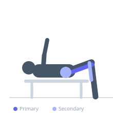
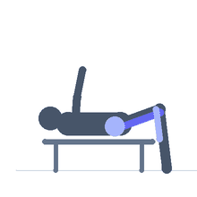

Exercise guide / Sliding Towel / Slider Leg Curl
Sliding Towel / Slider Leg Curl
The slider leg curl is performed on a smooth floor using a towel or furniture sliders under the heels. The lifter begins in a supine bridge and slides the heels toward the hips to curl the hamstrings, then slides back to full extension. Because the floor provides no catch, the eccentric phase demands significant hamstring control. It is an effective, equipment-free hamstring exercise that can be progressed to single-leg variations.
Primary muscles
biceps femoris long head
semitendinosus
semimembranosus
Secondary muscles
gluteus maximus
gastrocnemius medial
Stabilizers
transverse abdominis
Equipment
No Equipment (Bodyweight)


Starting position
- Lie on your back on a smooth floor. Place a small towel or furniture sliders under both heels. Legs extended, arms at sides.
Setup
- Use a smooth floor surface (hardwood or tile). Fold a towel and place it under both heels so they slide easily.
Steps
- Step 1: Drive the hips up into a bridge, forming a straight line from shoulders to heels.
- Step 2: While maintaining the bridge, slide the heels toward your hips by bending the knees.
- Step 3: Slide until the heels are close to the glutes.
- Step 4: Slide the heels back to the starting extended position with control, maintaining the hip bridge.
Coaching cues
- Hips stay high — squeeze your glutes
- Control the return slide
- Heels stay hip-width apart
Breathing
- Exhale on the curl, inhale on the return.
Range of motion
- Full extension to maximum knee flexion (heels near glutes).
Tempo
- 2-0-4-0 (2s curl, 4s return)
Common mistakes
- Hips sagging during the return phase
- Sliding too fast — use the hamstrings to control the eccentric
- Heels sliding outward
Safety
- Ensure the floor surface is smooth and consistent
- The eccentric return is high hamstring demand — control it carefully
Training
- strength: 8–12 reps
- hypertrophy: 12–20 reps
- strength: 3–4 sets
- hypertrophy: 3–4 sets
- Rest: {'strength': 90, 'hypertrophy': 60}